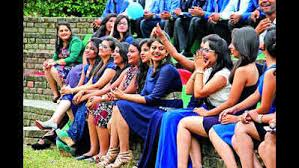

College fests are an essential part of campus life that bring students together for a fun-filled event, A college fest provides a platform to showcase the unique culture of the college. Students can exhibit their talents and skills in various competitions, and cultural events showcase the diverse backgrounds of the students. It helps in fostering a sense of pride and belongingness towards the college, college fest is also an excellent opportunity for community building. It brings students, faculty, and staff together on a common platform, providing them with an opportunity to interact and get to know each other better. Such events encourage students to come out of their shells, interact with others and make new friends. It is also an excellent opportunity for alumni to reconnect with the college community and relive their memories.
We invite participants from other colleges and universities. Such events provide a chance for students to interact with peers from other institutions, exchange ideas and learn from each other. These interactions often lead to collaborations and partnerships that benefit the students in the long run. Our college fest is also an excellent opportunity for students to develop their leadership and organizational skills. Organizing a college fest requires a team effort, and students learn to work together towards a common goal. It helps students to develop skills such as time management, communication, and problem-solving, which are essential for their future careers
college fest is not just an event for entertainment and fun, but it has a positive impact on campus culture and community building. It brings students together, and provides a platform for interaction and collaboration. College fests help in developing leadership and organizational skills, which are essential for future careers. Thus, in KITS engineering college we organize such events regularly to foster a sense of pride and belongingness among students and create a vibrant campus culture.